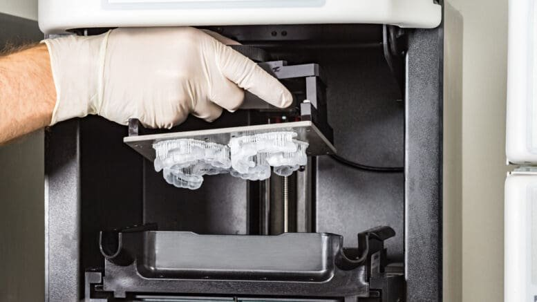

Custom · dentist-reviewed · UK-made


For night-time grinding & clenching
The Night Plate
£199
A custom-fitted guard that protects your teeth and eases the tension you carry through the night. Two builds — Soft and clinical-grade Hard — matched to how hard you grind, so you're not guessing at a material the way you would with a mail-order tray.
Choose your build
Hard — £199 · Recommended
Clinical-grade · the build that works for serious grinders · most durable
Hard, fitted by our dentists — £294
Personally fitted & adjusted in-clinic · Jersey, Guernsey or London
Soft — £119
Light-to-moderate clenchers · maximum comfort
Hard, on subscription — £99 / 6 months
A fresh clinical-grade plate every six months · cancel anytime
Un-clench is the only company that has dedicated its entire existence to jaw clenching and tooth grinding. Every hour of research, every product and every clinician we work with exists to do one thing: relieve the clench — using the latest clinical science, built to the standard of the leading experts we work with.
Fit guarantee. If your plate doesn't fit, we remake it free.
Dentist-reviewed. A GDC-registered dentist checks your case before your plate is made.
Custom, not one-size. Made from your own impressions or an uploaded intraoral scan.
UK dental lab. Fabricated properly, posted to your door in 10–14 days.
Designed by dental experts with careers in tooth wear and tension.